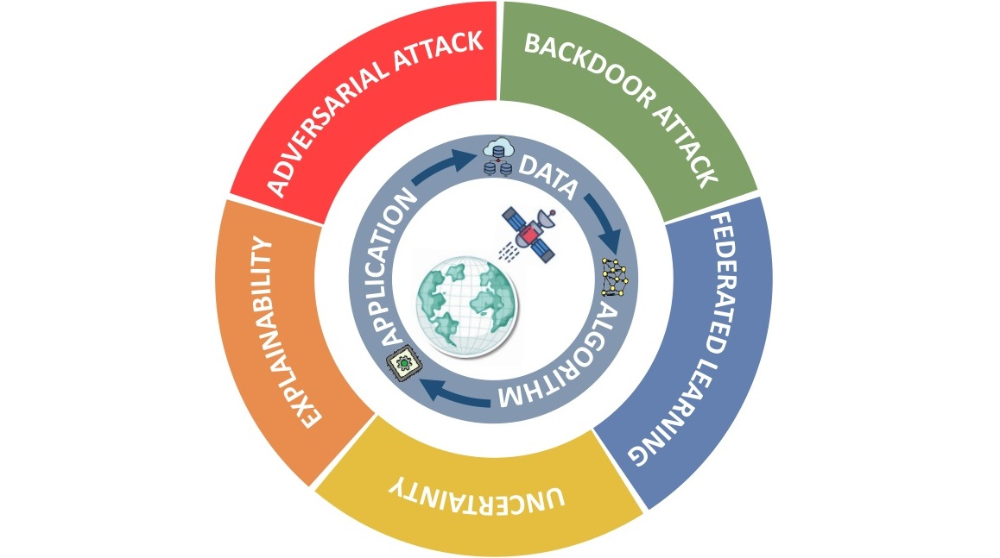
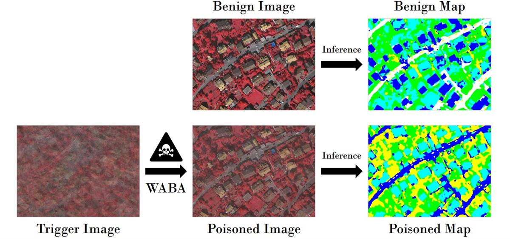
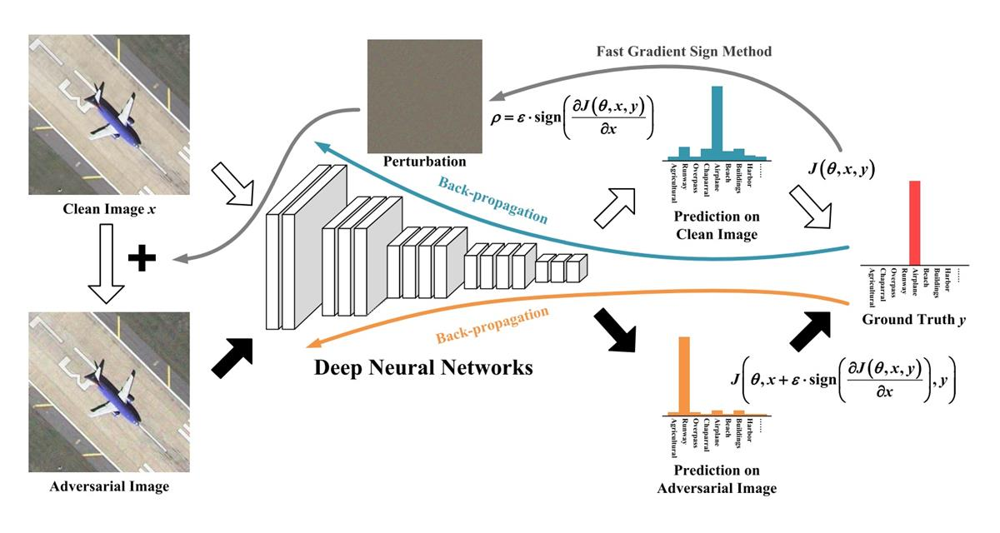

Yonghao Xu
Post-doctoral Researcher
Institute of Advanced Research in Artificial Intelligence
E-mail: yonghaoxu@ieee.org; yonghao.xu@iarai.ac.at
Short Biography
I am currently a post-doctoral researcher at the Institute of Advanced Research in Artificial Intelligence (IARAI) in Austria, working on AI4RS with Prof. Pedram Ghamisi. Before that, I received the Ph.D. degree in Photogrammetry and Remote Sensing from Wuhan University, advised by Prof. Liangpei Zhang and Prof. Bo Du.
News
2022/12/01 Call for Paper: Special Issue on "Remote Sensing for Disaster Response", Frontiers in Remote Sensing.
2022/11/01 Call for Paper: Special Issue on "Intelligent Remote Sensing Data Interpretation", Remote Sensing.
2022/10/01 Call for Paper: Special Issue on "Remote Sensing for Ecosystem Studies", Frontiers in Remote Sensing.
2022/08/01 Multiple Ph.D. and Postdoc Positions are available in AI4RS group at IARAI, Austria, and in Machine Learning Group at HZDR, Germany. See here for details.
2022/04/01 The Landslide4Sense 2022 competition opens! Landslide4Sense 2022 focuses on innovative algorithms for landslide detection using multi-sensor satellite data. See our GitHub page for the baseline code.
2022/04/01 Call for Paper: 2nd workshop on Complex Data Challenges in Earth Observation (CDCEO) in IJCAI-ECAI 2022.
2022/03/15 Call for Paper: Special Issue on "Adversarial Attacks and Defenses for Remote Sensing Data", Remote Sensing.
Research Interests and Selected Publications
Vision and Language Models for Remote Sensing
AI Security for Earth Observation
Y. Xu, T. Bai, W. Yu, S. Chang, P. M. Atkinson, and P. Ghamisi, “AI security for geoscience and remote sensing: Challenges and future trends,” arXiv preprint arXiv:2212.09360, 2022.
[Paper]N. Dr√§ger, Y. Xu, and P. Ghamisi, “Backdoor attacks for remote sensing data with wavelet transform,” arXiv preprint arXiv:2211.08044, 2022.
[Paper] [Code]
Y. Xu and P. Ghamisi, “Universal adversarial examples in remote sensing: Methodology and benchmark,” IEEE Trans. Geosci. Remote Sens., vol. 60, pp. 1−15, 2022.
[Paper] [Data] [Code] [Video]
Y. Xu, B. Du, and L. Zhang, “Self-attention context network: Addressing the threat of adversarial attacks for hyperspectral image classification,” IEEE Trans. Image Process., vol. 30, pp. 8671-8685, 2021.
[Paper] [Code]Y. Xu, B. Du, and L. Zhang, “Assessing the threat of adversarial examples on deep neural networks for remote sensing scene classification: Attacks and defenses,” IEEE Trans. Geosci. Remote Sens., vol. 59, no. 2, pp. 1604−1617, 2021. (ESI Highly Cited Paper)
[Paper]Intelligent Remote Sensing Data Interpretation
Natural Hazard Monitoring
Cross-Domain Semantic Segmentation of Urban Scenes

Y. Xu, W. Yu, P. Ghamisi, M. Kopp, and S. Hochreiter, “Txt2Img-MHN: Remote sensing image generation from text using modern hopfield networks,” arXiv preprint arXiv:2208.04441, 2022.
[Paper] [Code] [Video]

Y. Xu and P. Ghamisi, “Consistency-regularized region-growing network for semantic segmentation of urban scenes with point-level annotations,” IEEE Trans. Image Process., vol. 31, pp. 5038‚Äì5051, 2022.
[Paper] [Code]
Y. Xu, B. Du, and L. Zhang, “Robust self-ensembling network for hyperspectral image classification,” IEEE Trans. Neural Netw. Learn. Syst., doi: 10.1109/TNNLS.2022.3198142, 2022.
[Paper] [Code]

Y. Xu, B. Du, L. Zhang, D. Cerra, M. Pato, E. Carmona, S. Prasad, N. Yokoya, R. Hansch, and B. Le Saux, “Advanced multi-sensor optical remote sensing for urban land use and land cover classification: Outcome of the 2018 IEEE GRSS Data Fusion Contest,” in IEEE J. Sel. Top. Appl. Earth Obs. Remote Sens., vol. 12, no. 6, pp. 1709−1724, 2019. (ESI Highly Cited Paper)
[Paper] [Data]
Y. Xu, B. Du, F. Zhang, and L. Zhang, “Hyperspectral image classification via a random patches network,” ISPRS J. Photogram. Remote Sens., vol. 142, no. 10, pp. 344‚Äì357, 2018. (ESI Highly Cited Paper)
[Paper] [Code]

Y. Xu, L. Zhang, B. Du, and F. Zhang, “Spectral-spatial unified networks for hyperspectral image classification,” IEEE Trans. Geosci. Remote Sens., vol. 56, no. 10, pp. 5893−5909, 2018. (ESI Highly Cited Paper)
[Paper] [Code]

O. Ghorbanzadeh, Y. Xu, P. Ghamisi, M. Kopp, and D. Kreil, “Landslide4sense: Reference benchmark data and deep learning models for landslide detection,” IEEE Trans. Geosci. Remote Sens., vol. 60, pp. 1-17, 2022.
[Paper] [Data] [Code]
Y. Xu*, F. He*, B. Du, D. Tao, and L. Zhang, “Self-ensembling GAN for cross-domain semantic segmentation,” IEEE Trans. Multimedia, doi: 10.1109/TMM.2022.3229976, 2022.
[Paper] [Code]
L. Song*, Y. Xu*, L. Zhang, B. Du, Q. Zhang, and X. Wang, “Learning from synthetic images via active pseudo-labeling,” IEEE Trans. Image Process., vol. 29, pp. 6452-6465, 2020.
[Paper] [Code]

Y. Xu, B. Du, L. Zhang, Q. Zhang, G. Wang, and L. Zhang, “Self-ensembling attention networks: Addressing domain shift for semantic segmentation,” in Proc. AAAI Conf. Artif. Intell., vol. 33, pp. 5581−5588, 2019.
[Paper] [Code]
Honors and Awards
Nominees award of Top 10 Academic Stars for graduate students at Wuhan University in 2019.
National Scholarship in 2015, 2018, and 2019.
1st Place in 2018 IEEE GRSS Data Fusion Contest.
Academic Services and Activities
Co-Lead of the WG-BEN in IEEE GRSS Image Analysis and Data Fusion Technical Committee, 2022 – Now.
-
Guest Editor of Special Issue on Intelligent Remote Sensing Data Interpretation, Remote Sensing, 2022 – 2023.
-
Guest Editor of Special Issue on Adversarial Attacks and Defenses for Remote Sensing Data, Remote Sensing, 2022 – 2023.
-
Guest Editor of Special Issue on Remote Sensing for Disaster Response, Frontiers in Remote Sensing, 2022 – 2023.
-
Guest Editor of Special Issue on Remote Sensing for Ecosystem Studies, Frontiers in Remote Sensing, 2022 – 2023.
-
Organizing Committee Member of Landslide4Sense 2022 Competition.
-
Technical Committee Member of CVPR 2022 Workshop on EARTHVISION.
-
Program Committee Member of IJCAI 2022 Workshop on CDCEO.
-
Program Committee Member of CIKM 2021 Workshop on CDCEO.
Chapter Chair of the IEEE GRSS Wuhan Student Branch, 2017 – 2020.
Journal Reviewer
IEEE Transactions on Geoscience and Remote Sensing
IEEE Transactions Circuits and Systems for Video Technology
IEEE Transactions on Big Data
IEEE Journal of Selected Topics on Applied Remote Sensing
IEEE Geoscience and Remote Sensing Letters
ISPRS Journal of Photogrammetry and Remote Sensing
International Journal of Remote Sensing
Pattern Recognition
Neural Networks